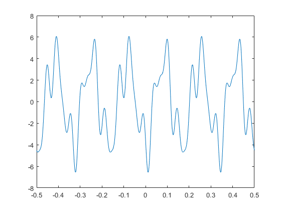

3.3.1
ss(1).freq = 27; ss(1).complexAmp = exp(1j*pi/3); ss(2).freq = 18; ss(2).complexAmp = 2i; ss(3).freq = 6; ss(3).complexAmp = -4; % dur = 1; tstart = -0.5; dt = 1/(27*32); %-- use the highest frequency to define delta_t % ssOut = addCosVals( ss, dur, tstart, dt ); % plot( ssOut.times, ssOut.values ) % function sigOut = addCosVals( cosIn, dur, tstart, dt ) %ADDCOSVALS Synthesize a signal from sum of sinusoids %(do not assume all the frequencies are the same) % % usage: sigOut = addCosVals( cosIn, dur, tstart, dt ) % % cosIn = vector of structures; each one has the following fields: % cosIn.freq = frequency (in Hz), usually none should be negative % cosIn.complexAmp = COMPLEX amplitude of the cosine % % dur = total time duration of all the cosines % start = starting time of all the cosines % dt = time increment for the time vector % % The output structure has only signal values because it is not necessarily a sinusoid % sigOut.values = vector of signal values at t = sigOut.times % sigOut.times = vector of times, for the time axis % % The sigOut.times vector should be generated with a small time increment that % creates 32 samples for the shortest period, i.e., use the period % corresponding to the highest frequency cosine in the input array of structures. % <--- Write your code here ---> n = length(cosIn); % number of sinusoids t = tstart:dt:tstart+dur; % time vector x = zeros(1, length(t)); % initialize sum of sinusoids % calculate sum of sinusoids for k = 1:n x = x + cosIn(k).complexAmp * exp(1j * 2 * pi * cosIn(k).freq * t ); end % store results in output structure sigOut.values = x; sigOut.times = t; end
Warning: Imaginary parts of complex X and/or Y arguments ignored.